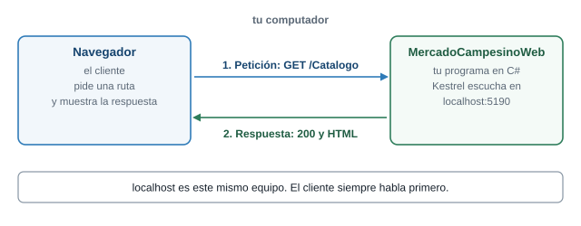
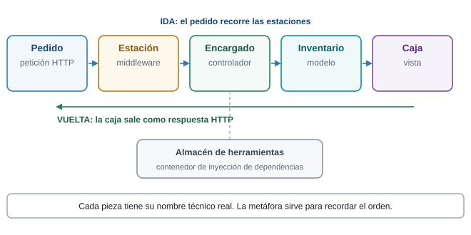
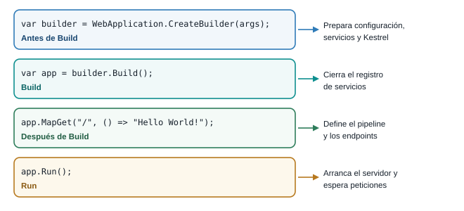
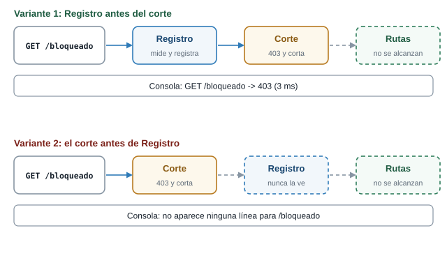
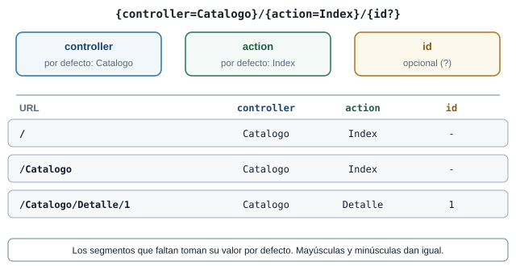
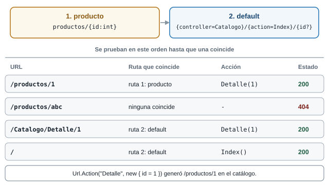
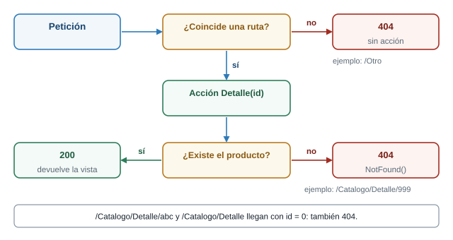

Semana 10. Servidor propio con ASP.NET Core MVC, desde cero
| Qué construyes | El servidor de Mercado Campesino Digital, en seis etapas, desde un proyecto vacío |
| Prerrequisitos | Semana 8: peticiones HTTP, JSON y DevTools |
| Herramientas | .NET SDK 10, VS Code (o cualquier editor) y una terminal |
Presentación interactiva de las etapas 0 a 2: proyecto vacío, pipeline y middleware
Presentación interactiva de las etapas 3 a 5: MVC, rutas e inyección de dependencias
1 Lo que vas a lograr
Hasta la Semana 8 tu panel del productor pedía los datos a un servidor ajeno. Esta semana el servidor lo escribes tú. Partes de una carpeta vacía y, en seis etapas, llegas a un servidor ASP.NET Core que atiende rutas como /Catalogo y /Catalogo/Detalle/4 con el catálogo del proyecto Mercado Campesino Digital. Todo se hace con un editor y la terminal. No hay asistentes ni plantillas que generen código por ti: cada archivo lo escribes, lo ejecutas y ves qué cambió.
Cliente y servidor, en tu computador
La conversación es la de la Semana 8: una petición y una respuesta. Cambia quién escribe el servidor. Tu servidor es un programa en C#. Kestrel, el servidor web que trae ASP.NET Core, abre un puerto y entrega cada petición al código de tu proyecto. Con localhost, el navegador y el servidor corren en el mismo computador.

El cliente siempre empieza la conversación.
La línea de empaque
Para recordar el orden de las piezas usarás una sola imagen: una línea de empaque. Cada petición es un pedido que llega con una etiqueta (la URL). Recorre una fila de estaciones (el pipeline). Un encargado lo arma (el controlador) con lo que hay en el inventario (el modelo) y lo entrega en una caja (la vista) que sale por la misma línea. Las herramientas que necesita el encargado las guarda un almacén (el contenedor de inyección de dependencias). Los nombres técnicos aparecen siempre con su nombre real. La línea de empaque ayuda a recordar el orden.

Cada pieza de la línea tiene un nombre técnico.
Las seis etapas
Cada etapa agrega una sola idea al proyecto y termina con algo que ejecutas y ves.
- Etapa 0. Proyecto vacío. El proyecto de
dotnet new weby suProgram.cs. Archivos: los 5 que genera la plantilla. - Etapa 1. Pipeline. Un middleware en línea que registra cada petición y la ruta
/salud. Archivos nuevos: ninguno, cambiaProgram.cs. - Etapa 2. Middleware como clase. El mismo middleware, en su propia clase. Archivo nuevo:
Middleware/RegistroPeticionesMiddleware.cs. - Etapa 3. MVC a mano. Modelo, controlador y vista del catálogo. Archivos nuevos:
Models/Producto.cs,Controllers/CatalogoController.csyViews/Catalogo/Index.cshtml. - Etapa 4. Rutas y 404. Detalle de un producto, ruta propia y respuesta 404. Archivo nuevo:
Views/Catalogo/Detalle.cshtml. - Etapa 5. Inyección de dependencias. Un servicio detrás de una interfaz y su registro. Archivos nuevos:
Services/ICatalogoService.cs,Services/CatalogoEnMemoria.csy los de la demostración.
El árbol de carpetas crece así. Vuelve a este diagrama al terminar cada etapa y comprueba que tu carpeta tiene lo mismo.

Un punto verde marca el archivo que aparece, uno ámbar el que cambia y uno gris el que sigue igual.
Al terminar la guía sabes:
- Crear un proyecto web vacío con
dotnet new weby leer cada uno de sus archivos. - Explicar el pipeline y escribir un middleware en línea y como clase.
- Predecir cómo cambia el resultado cuando cambia el orden de los middleware.
- Armar un catálogo con modelo, controlador y vista, y entender qué busca MVC y dónde.
- Predecir qué controlador y qué acción atiende una URL, y por qué una ruta termina en 404.
- Usar una interfaz y el contenedor de inyección de dependencias.
- Dejar el servidor de tu proyecto respondiendo a sus rutas base.
2 Preparación del entorno
Necesitas el panel del productor de la Semana 8 (HTML, CSS y JavaScript con fetch), una terminal y el .NET SDK 10. Comprueba que está instalado:
dotnet --versionLa guía se escribió y se probó con la versión 10.0.302. Los mensajes de dotnet salen en el idioma de tu sistema: aquí aparecen en español porque así salieron en la prueba.
El editor es VS Code, aunque cualquier editor de texto sirve: el proyecto se compila y se ejecuta desde la terminal con el SDK, y el editor solo te ayuda a escribir.
- Crea una carpeta para el proyecto y ábrela en VS Code. Desde una terminal dentro de la carpeta:
code . - Instala la extensión de C# de Microsoft. En la máquina donde se preparó esta guía estaban instaladas
ms-dotnettools.csharpyms-dotnettools.csdevkit(C# Dev Kit). Dan resaltado de sintaxis y ayudas al escribir. El código no las necesita para compilar ni ejecutar. - Abre la terminal integrada de VS Code (menú Terminal). Trabajarás en ella: es la misma terminal que usarías fuera del editor y queda ya ubicada en la carpeta del proyecto.
Todos los comandos y las salidas de esta guía se ejecutaron en una máquina con Windows 11. Los pasos de la interfaz de VS Code (instalar la extensión, abrir la terminal integrada) no se probaron uno por uno: si tu pantalla se ve distinta, busca la opción equivalente. Cada vez que algo no se probó, la guía lo dice.
3 Etapa 0. Un proyecto vacío
El problema
Antes de escribir middleware o controladores necesitas saber qué trae un proyecto web y cuántas piezas son realmente imprescindibles. La plantilla web crea el proyecto más pequeño posible: no trae controladores, ni vistas, ni estilos. Es el punto de partida de todo lo demás.
Un servidor que responde “Hello World” es un programa. ¿Cuántas líneas de C# crees que hacen falta para que escuche peticiones y conteste una? Escribe un número y compáralo al final de la etapa.
Cuatro instrucciones. Están en Program.cs, que es todo el código que trae la plantilla.
Crear el proyecto
En la terminal, dentro de la carpeta donde guardas tus proyectos:
dotnet new web -n MercadoCampesinoWebLa salida literal fue:
La plantilla "ASP.NET Core vacío" se creó correctamente.
Procesando acciones posteriores a la creación...
Restaurando ...\MercadoCampesinoWeb\MercadoCampesinoWeb.csproj:
Determinando los proyectos que se van a restaurar...
Se ha restaurado ...\MercadoCampesinoWeb\MercadoCampesinoWeb.csproj (en 109 ms).
Restauración realizada correctamente.Entra a la carpeta que se creó y ábrela en el editor:
cd MercadoCampesinoWeb
code .La plantilla generó estos archivos (la carpeta obj/ aparece después, cuando el SDK restaura el proyecto):
MercadoCampesinoWeb/
MercadoCampesinoWeb.csproj
Program.cs
appsettings.json
appsettings.Development.json
Properties/launchSettings.json
obj/ (lo crea el restore; no se versiona)No hay wwwroot, ni Controllers, ni Views, ni layout. La plantilla tampoco crea un .gitignore: si usas Git, bin/ y obj/ quedan sin ignorar hasta que agregues uno.
Qué hace cada archivo
El archivo de proyecto, MercadoCampesinoWeb.csproj, dice qué es esto y cómo se compila:
<Project Sdk="Microsoft.NET.Sdk.Web">
<PropertyGroup>
<TargetFramework>net10.0</TargetFramework>
<Nullable>enable</Nullable>
<ImplicitUsings>enable</ImplicitUsings>
</PropertyGroup>
</Project>| Línea | Qué significa |
|---|---|
Sdk="Microsoft.NET.Sdk.Web" |
Usa el SDK web: trae ASP.NET Core sin referenciar paquetes a mano |
TargetFramework net10.0 |
Compila contra .NET 10 |
Nullable enable |
El compilador avisa de posibles referencias nulas |
ImplicitUsings enable |
Agrega por defecto los using más comunes. Por eso Program.cs no tiene ninguno |
Los dos appsettings son configuración. appsettings.json fija el nivel de registro del framework: Microsoft.AspNetCore en Warning. Consecuencia: el framework no imprime una línea por cada petición, solo los mensajes de arranque.
Properties/launchSettings.json define dos perfiles, http y https, con sus puertos y con ASPNETCORE_ENVIRONMENT en Development. La plantilla sortea los puertos al crear el proyecto, así que en tu máquina serán otros.
Program.cs, línea por línea
Todo el código del servidor es este archivo:
var builder = WebApplication.CreateBuilder(args);
var app = builder.Build();
app.MapGet("/", () => "Hello World!");
app.Run();- Línea 1,
var builder = WebApplication.CreateBuilder(args);Crea el constructor de la aplicación. Lee configuración (appsettings.json, variables de entorno,args), prepara el registro de servicios y el servidor Kestrel. - Línea 2,
var app = builder.Build();Cierra el registro de servicios y construye la aplicación. A partir de aquí configuras el pipeline, ya no los servicios. - Línea 4,
app.MapGet("/", () => "Hello World!");Registra un endpoint: paraGET /ejecuta la función y escribe el texto como respuesta. - Línea 6,
app.Run();Arranca el servidor y espera. El programa sigue vivo hasta que lo detienes.

Lo que va antes de Build es el registro de servicios. Lo que va después define cómo responde el servidor.
El archivo no tiene using ni método Main. Son instrucciones de nivel superior: el compilador genera por ti la clase Program y el método Main.
vardeclara una variable y deja que el compilador deduzca su tipo.() => "Hello World!"es una expresión lambda: una función sin nombre. Los paréntesis vacíos dicen que no recibe parámetros, y lo que está después de=>es lo que devuelve.argsson los argumentos con que se ejecutó el programa en la terminal.
Ejecutar el servidor
Compila y ejecuta. Los dos comandos hacen un trabajo distinto: dotnet build solo comprueba que el código compila, y dotnet run compila y además arranca el programa.
dotnet build Determinando los proyectos que se van a restaurar...
Se ha restaurado ...\etapa-0-vacio\MercadoCampesinoWeb\MercadoCampesinoWeb.csproj (en 103 ms).
MercadoCampesinoWeb -> ...\etapa-0-vacio\MercadoCampesinoWeb\bin\Debug\net10.0\MercadoCampesinoWeb.dll
Compilación correcta.
0 Advertencia(s)
0 Errores
Tiempo transcurrido 00:00:02.21Para que todos los equipos usen la misma dirección, en esta guía se ejecuta siempre con el puerto fijado:
dotnet run --no-launch-profile --urls http://localhost:5190--urls fija la dirección y el puerto. --no-launch-profile hace que ignore launchSettings.json. La consola muestra:
info: Microsoft.Hosting.Lifetime[14]
Now listening on: http://localhost:5190
info: Microsoft.Hosting.Lifetime[0]
Application started. Press Ctrl+C to shut down.
info: Microsoft.Hosting.Lifetime[0]
Hosting environment: Production
info: Microsoft.Hosting.Lifetime[0]
Content root path: ...\etapa-0-vacio\MercadoCampesinoWebDos cosas para leer. Now listening on: http://localhost:5190 es el programa avisando en qué puerta atiende. Y Hosting environment: Production aparece porque --no-launch-profile ignoró el archivo que fijaba Development. Esa línea te dice en qué entorno corre.
Abre http://localhost:5190/ en el navegador. Esto es lo que respondió el servidor:
| Petición | Estado | Tipo de contenido | Cuerpo |
|---|---|---|---|
GET / |
200 OK |
text/plain; charset=utf-8 |
Hello World! |
GET /otra |
404 Not Found |
(ninguno) | vacío |
La consola no imprime nada por petición. Para detener el servidor, la propia consola lo dice: Press Ctrl+C to shut down.
dotnet watch: recarga al guardar
Cada cambio en el código te obliga a detener el servidor y volver a ejecutarlo. dotnet watch vigila los archivos y recarga cuando guardas:
dotnet watch run --no-launch-profile --urls http://localhost:5190Lo que se midió en esta máquina:
| Prueba | Resultado observado |
|---|---|
| Arranque (incluye restore y build) | App respondiendo a los 9,7 s de lanzar el comando |
Cambiar el texto de MapGet("/") y guardar |
File updated: .\Program.cs y C# and Razor changes applied in 2729ms. La respuesta cambió de Hello World! a Hola, Mercado Campesino 2,9 s después de guardar, sin reiniciar el proceso |
Quitar un ; (error de compilación) |
Unable to apply changes due to compilation errors. y Program.cs(6,10): error CS1002: Se esperaba ;. La app siguió respondiendo con la última versión buena |
| Corregir el error | La app volvió a funcionar sin reiniciar dotnet watch |
Agregar una ruta nueva con app.MapGet("/nueva", ...) |
warning ENC0118: Es posible que el cambio de "código de nivel superior" no tenga efecto hasta que se reinicie la aplicación. Press "Ctrl + R" to restart. y GET /nueva siguió respondiendo 404 |
Entonces: un cambio en el cuerpo de una lambda se aplica en caliente, y una ruta nueva en Program.cs pide reiniciar. El propio mensaje te dice cómo: Ctrl + R en la terminal de dotnet watch, o detenerlo y volver a ejecutarlo. Esas dos teclas no se pudieron probar en una terminal interactiva al preparar la guía, así que usa lo que el mensaje te indique en tu pantalla. Sin dotnet watch, dotnet run no recarga nada.
Cierre de la etapa 0
- Qué cambió: el proyecto nace. No hay etapa anterior.
- Cómo verificarlo:
dotnet run --no-launch-profile --urls http://localhost:5190y abrehttp://localhost:5190/. - Qué debes ver:
Hello World!en el navegador,404en/otray, en la consola,Now listening on: http://localhost:5190. La respuesta a la pregunta del inicio: cuatro instrucciones.
4 Etapa 1. El pipeline y el middleware en línea
El problema
Quieres saber qué peticiones llegan al servidor y cuánto tardan, y ahora la consola no dice nada. Podrías escribir Console.WriteLine dentro de cada ruta, pero entonces tendrías que repetirlo en cada una y no verías las rutas que no existen. Lo que necesitas es un lugar que vea todas las peticiones antes de que lleguen a cualquier ruta.
Si pides /no-existe, que ninguna ruta atiende, ¿crees que el registro lo verá? Piensa dónde tendría que estar el código para verlo.
Sí, lo verá, siempre que esté antes de la selección de la ruta. Lo comprobarás en esta etapa: /no-existe queda registrado con 404.
Modelo mental: el pipeline
Una petición no llega directo a tu ruta. Antes pasa por una cadena de middleware, el pipeline. Cada middleware es una estación de la línea de empaque: recibe el pedido, hace su trabajo y decide si lo pasa a la estación siguiente. Cuando la última estación responde, la respuesta vuelve por la misma cadena.

El middleware tiene dos momentos: lo que hace a la ida y lo que hace a la vuelta.
El código
Cambia Program.cs por esto:
using System.Diagnostics;
var builder = WebApplication.CreateBuilder(args);
var app = builder.Build();
// Registro de peticiones. Va primero para ver todo lo que entra y medir todo lo que sigue.
app.Use(async (contexto, siguiente) =>
{
var reloj = Stopwatch.StartNew();
// Todo lo que sigue en la cadena corre aqui adentro; al volver ya hay respuesta.
await siguiente();
reloj.Stop();
Console.WriteLine(
$"{contexto.Request.Method} {contexto.Request.Path} -> {contexto.Response.StatusCode} ({reloj.ElapsedMilliseconds} ms)");
});
app.MapGet("/", () => "Mercado Campesino Digital");
app.MapGet("/salud", () => "ok");
app.Run();Qué cambió respecto de la etapa 0:
--- anterior
+++ nuevo
@@ -1,6 +1,22 @@
+using System.Diagnostics;
+
var builder = WebApplication.CreateBuilder(args);
var app = builder.Build();
-app.MapGet("/", () => "Hello World!");
+// Registro de peticiones. Va primero para ver todo lo que entra y medir todo lo que sigue.
+app.Use(async (contexto, siguiente) =>
+{
+ var reloj = Stopwatch.StartNew();
+
+ // Todo lo que sigue en la cadena corre aqui adentro; al volver ya hay respuesta.
+ await siguiente();
+
+ reloj.Stop();
+ Console.WriteLine(
+ $"{contexto.Request.Method} {contexto.Request.Path} -> {contexto.Response.StatusCode} ({reloj.ElapsedMilliseconds} ms)");
+});
+
+app.MapGet("/", () => "Mercado Campesino Digital");
+app.MapGet("/salud", () => "ok");
app.Run();Por qué cada pieza:
app.Use(async (contexto, siguiente) => ...)registra un middleware en línea.contextoes la petición y la respuesta en curso.siguientees el resto de la cadena.await siguiente();ejecuta el resto de la cadena y vuelve cuando ya hay respuesta. Por eso el estado y el tiempo se leen después de esa línea.- Lo que va antes de
siguiente()corre a la ida. Lo que va después, a la vuelta. app.MapGet("/salud", () => "ok");es una segunda ruta, para tener algo más que pedir.
using System.Diagnostics;trae el espacio de nombres donde viveStopwatch, un cronómetro.- Una lambda puede recibir parámetros:
(contexto, siguiente) => { ... }. asyncyawaitpermiten esperar un trabajo sin bloquear el programa.siguiente()devuelve algo que se espera conawait.$"...{expresión}..."es una cadena interpolada: dentro de las llaves va código C# cuyo valor entra en el texto.
Verificar
Ejecuta con dotnet run --no-launch-profile --urls http://localhost:5190 y pide en el navegador /, /salud, /no-existe y /favicon.ico. Respuestas observadas:
| Petición | Estado | Cuerpo |
|---|---|---|
GET / |
200 OK |
Mercado Campesino Digital |
GET /salud |
200 OK |
ok |
GET /no-existe |
404 Not Found |
vacío |
GET /favicon.ico |
404 Not Found |
vacío |
Y la consola, después de los mensajes de arranque:
GET / -> 200 (3 ms)
GET /salud -> 200 (0 ms)
GET /no-existe -> 404 (0 ms)
GET /favicon.ico -> 404 (0 ms)Aun las rutas que no existen quedan registradas con 404: el middleware está antes de la selección de la ruta. Los milisegundos varían en cada ejecución.
Experimento: el orden importa
Un middleware que no llama a siguiente corta la cadena. Para verlo, agrega justo después del bloque de registro (y antes de los MapGet) este segundo middleware:
app.Use(async (contexto, siguiente) =>
{
if (contexto.Request.Path == "/bloqueado")
{
contexto.Response.StatusCode = 403;
await contexto.Response.WriteAsync("bloqueado por middleware");
return;
}
await siguiente();
});Pide /bloqueado y /salud. Observado con el registro antes del corte:
GET /salud -> 200 (3 ms)
GET /bloqueado -> 403 (0 ms)/bloqueado responde 403 con el texto bloqueado por middleware, y el registro lo ve. Ahora mueve el bloque del corte arriba del registro. Lo medido fue que /bloqueado sigue respondiendo 403 y /salud 200, pero la consola solo imprime la línea de /salud: la petición bloqueada no se registra.

El mismo código, con otro orden, produce otro resultado.
Resultados de las cuatro variantes que se probaron. corta es el middleware de arriba, termina es un app.Run que responde fin de la cadena y registro es el de la etapa:
| Variante | Orden de registro | Respuestas | Consola |
|---|---|---|---|
| 1 | registro, corta, rutas | /bloqueado 403 bloqueado por middleware; /salud 200 ok |
GET /bloqueado -> 403 (3 ms) y GET /salud -> 200 (1 ms) |
| 2 | corta, registro, rutas | igual que la 1 | solo GET /salud -> 200 (2 ms) |
| 3 | registro, app.Run, rutas |
/, /salud y /cualquiera: 200 fin de la cadena |
las tres, con 200 |
| 4 | app.Run, registro, rutas |
las tres: 200 fin de la cadena |
ninguna línea |
Dos reglas que salen de ahí:
- Un middleware que no llama a
siguientecorta la cadena: lo registrado después no se ejecuta para esa petición. app.Runes terminal. Las rutas deMapGetescritas después de él nunca se alcanzan. En la variante 4 la petición se atiende y el registro no se entera: es el mismo código con otro orden.
Quita el middleware del corte antes de pasar a la etapa 2.
Tienes tres middleware registrados en este orden: el de registro, un app.Run que responde fin de la cadena y después las rutas MapGet("/") y MapGet("/salud"). Pides /salud. ¿Qué texto recibes y qué imprime la consola?
Recibes fin de la cadena con estado 200, no ok. El app.Run es terminal y atiende toda petición que le llega, así que la ruta /salud nunca se alcanza. La consola imprime GET /salud -> 200 (...): el registro está antes del app.Run, ve la petición y la mide. Es la variante 3 de la tabla.
Cierre de la etapa 1
- Qué cambió:
Program.cstiene un middleware en línea y una ruta/salud. - Cómo verificarlo: ejecuta y pide
/,/saludy/no-existe. - Qué debes ver:
Mercado Campesino Digital,oky un404, y en la consola tres líneasGET ... -> ... (N ms), una por petición.
5 Etapa 2. El middleware como clase
El problema
El bloque de registro vive dentro de Program.cs y ya ocupa una parte importante del archivo. Si agregas autenticación, errores y más, Program.cs se vuelve ilegible. Un middleware con nombre propio se puede leer, mover y reutilizar por separado.
Si sacas el mismo código a una clase, ¿qué dos cosas tiene que recibir esa clase del framework para hacer lo mismo que el bloque en línea?
Necesita la siguiente estación (lo que en la lambda era el parámetro siguiente) y el contexto de cada petición. El framework entrega la primera al construir la clase, y el segundo cada vez que llega una petición.
El código
Crea la carpeta Middleware y dentro el archivo RegistroPeticionesMiddleware.cs:
using System.Diagnostics;
namespace MercadoCampesinoWeb.Middleware;
public class RegistroPeticionesMiddleware
{
private readonly RequestDelegate _siguiente;
// El framework entrega aqui el siguiente eslabon de la cadena.
public RegistroPeticionesMiddleware(RequestDelegate siguiente)
{
_siguiente = siguiente;
}
public async Task InvokeAsync(HttpContext contexto)
{
var reloj = Stopwatch.StartNew();
await _siguiente(contexto);
reloj.Stop();
Console.WriteLine(
$"{contexto.Request.Method} {contexto.Request.Path} -> {contexto.Response.StatusCode} ({reloj.ElapsedMilliseconds} ms)");
}
}Y deja Program.cs así:
using MercadoCampesinoWeb.Middleware;
var builder = WebApplication.CreateBuilder(args);
var app = builder.Build();
// Primero en la cadena: ve todas las peticiones y mide todo lo que sigue.
app.UseMiddleware<RegistroPeticionesMiddleware>();
app.MapGet("/", () => "Mercado Campesino Digital");
app.MapGet("/salud", () => "ok");
app.Run();Qué cambió respecto de la etapa 1:
--- anterior
+++ nuevo
@@ -1,19 +1,9 @@
-using System.Diagnostics;
+using MercadoCampesinoWeb.Middleware;
var builder = WebApplication.CreateBuilder(args);
var app = builder.Build();
-// Registro de peticiones. Va primero para ver todo lo que entra y medir todo lo que sigue.
-app.Use(async (contexto, siguiente) =>
-{
- var reloj = Stopwatch.StartNew();
-
- // Todo lo que sigue en la cadena corre aqui adentro; al volver ya hay respuesta.
- await siguiente();
-
- reloj.Stop();
- Console.WriteLine(
- $"{contexto.Request.Method} {contexto.Request.Path} -> {contexto.Response.StatusCode} ({reloj.ElapsedMilliseconds} ms)");
-});
+// Primero en la cadena: ve todas las peticiones y mide todo lo que sigue.
+app.UseMiddleware<RegistroPeticionesMiddleware>();
app.MapGet("/", () => "Mercado Campesino Digital");
El cuerpo no cambia. Cambia dónde vive y cómo recibe siguiente.
- Una clase agrupa datos y comportamiento:
public class RegistroPeticionesMiddleware. namespace MercadoCampesinoWeb.Middleware;dice a qué grupo de nombres pertenece. ElusingdeProgram.cslo trae.- Un campo privado
private readonly RequestDelegate _siguiente;guarda un valor dentro del objeto.readonlyimpide cambiarlo después de la construcción. - El constructor tiene el nombre de la clase y recibe lo que el objeto necesita para existir.
- Un método
async Taskes el equivalente de la lambdaasync.
El framework construye la clase una sola vez y le entrega RequestDelegate en el constructor. InvokeAsync corre en cada petición. El método debe llamarse Invoke o InvokeAsync.
Verificar
Ejecuta de nuevo. La salida es idéntica a la de la etapa 1: las mismas respuestas y las mismas líneas de consola. Es lo esperado, porque el comportamiento no cambió.
GET / -> 200 (5 ms)
GET /salud -> 200 (0 ms)
GET /no-existe -> 404 (0 ms)
GET /favicon.ico -> 404 (0 ms)Cambia el nombre del método InvokeAsync por Registrar y ejecuta dotnet build y después dotnet run. ¿Compila? ¿Cuándo aparece el error y qué dice?
El proyecto compila: para el compilador Registrar es un método válido. El error aparece al arrancar, en UseMiddleware, porque el framework busca por nombre un método Invoke o InvokeAsync. El mensaje literal fue:
System.InvalidOperationException: No public 'Invoke' or 'InvokeAsync' method found for middleware of type 'MercadoCampesinoWeb.Middleware.RegistroPeticionesMiddleware'.Devuelve el nombre InvokeAsync antes de seguir.
Cierre de la etapa 2
- Qué cambió: el registro vive en
Middleware/RegistroPeticionesMiddleware.csyProgram.cssolo lo registra conapp.UseMiddleware<...>(). - Cómo verificarlo: ejecuta y pide
/,/saludy/no-existe. - Qué debes ver: exactamente lo mismo que en la etapa 1.
6 Etapa 3. MVC armado a mano
El problema
Hasta ahora cada respuesta es un texto escrito dentro de Program.cs. El catálogo del proyecto es una lista de productos con nombre, precio, cantidad y productor, y debe verse como una página HTML. Escribir todo eso dentro de una lambda mezclaría los datos, la decisión de qué mostrar y el HTML. MVC separa esas tres responsabilidades en tres piezas.
En la línea de empaque, ¿qué piezas hacen falta para devolver un catálogo en HTML? Nómbralas con su nombre de la línea (pedido, estación, encargado, inventario, caja) y con su nombre técnico.
El encargado (controlador) recibe el pedido, consulta el inventario (modelo, la lista de Producto) y entrega los datos a la caja (vista), que los empaca como HTML. La petición llega hasta el encargado por la estación de rutas.

El recorrido completo de una petición al catálogo.
El código
Esta etapa agrega tres archivos y cambia Program.cs. Crea las carpetas Models, Controllers, Views y Views/Catalogo.
El modelo, Models/Producto.cs:
namespace MercadoCampesinoWeb.Models;
public class Producto
{
public int Id { get; set; }
public string Nombre { get; set; } = "";
public decimal Precio { get; set; }
public int Cantidad { get; set; }
public string Productor { get; set; } = "";
// RN-03: sin cantidad disponible se muestra como agotado, sin ocultarse del catalogo.
public bool Agotado => Cantidad <= 0;
}- Una propiedad
public int Id { get; set; }es un dato de la clase que se puede leer y escribir. Cada producto tieneId,Nombre,Precio,CantidadyProductor. = "";da un valor inicial a un texto, para que nunca sea nulo.public bool Agotado => Cantidad <= 0;es una propiedad calculada: no guarda nada, responde segúnCantidad. Así expresas la regla RN-03: sin cantidad disponible, el producto se muestra como agotado y no se oculta.
El controlador, Controllers/CatalogoController.cs:
using MercadoCampesinoWeb.Models;
using Microsoft.AspNetCore.Mvc;
namespace MercadoCampesinoWeb.Controllers;
public class CatalogoController : Controller
{
// La lista vive aqui por ahora; en la etapa 5 sale de un servicio.
public IActionResult Index()
{
var productos = new List<Producto>
{
new() { Id = 1, Nombre = "Papa criolla", Precio = 3200m, Cantidad = 40, Productor = "Finca La Esperanza" },
new() { Id = 2, Nombre = "Mora de Castilla", Precio = 6500m, Cantidad = 0, Productor = "Finca El Roble" },
new() { Id = 3, Nombre = "Panela redonda", Precio = 4800m, Cantidad = 25, Productor = "Trapiche San José" },
};
return View(productos);
}
}List<Producto>es una lista que solo guardaProducto. El tipo entre<y>es el de sus elementos.new() { Id = 1, Nombre = "...", ... }crea un objeto y asigna sus propiedades en un solo paso.- Un controlador es una clase que hereda de
Controller(: Controller). Cada método público que devuelveIActionResultes una acción. View(productos)le dice a MVC: usa la vista de esta acción y pásale esta lista.
La vista, Views/Catalogo/Index.cshtml:
@using System.Globalization
@using MercadoCampesinoWeb.Models
@model List<Producto>
<!DOCTYPE html>
<html lang="es">
<head>
<meta charset="utf-8" />
<title>Catálogo | Mercado Campesino Digital</title>
</head>
<body>
<h1>Catálogo de productos</h1>
<ul>
@foreach (var producto in Model)
{
<li>
@producto.Nombre, @producto.Precio.ToString("C0", new CultureInfo("es-CO")), @producto.Productor:
@(producto.Agotado ? "Agotado" : $"{producto.Cantidad} disponibles")
</li>
}
</ul>
</body>
</html>Un archivo .cshtml es HTML con fragmentos de C# marcados con @. @model List<Producto> declara qué recibe la vista. @foreach repite el bloque por cada producto. @producto.Nombre escribe el valor, y @(producto.Agotado ? "Agotado" : $"{producto.Cantidad} disponibles") escoge un texto según la propiedad calculada del modelo. El precio sale formateado con la cultura es-CO: Precio.ToString("C0", new CultureInfo("es-CO")) produjo $ 3.200.
La vista incluye su propio <!DOCTYPE html>, <head> y <body> porque todavía no hay layout: sin él, la vista es el documento completo.
Program.cs, con el registro de MVC y la ruta:
using MercadoCampesinoWeb.Middleware;
var builder = WebApplication.CreateBuilder(args);
// Registra lo que MVC necesita: controladores y vistas Razor.
builder.Services.AddControllersWithViews();
var app = builder.Build();
app.UseMiddleware<RegistroPeticionesMiddleware>();
app.MapGet("/salud", () => "ok");
// Ruta convencional: /Catalogo llama a CatalogoController.Index. En "/" cae en Catalogo/Index.
app.MapControllerRoute(
name: "default",
pattern: "{controller=Catalogo}/{action=Index}/{id?}");
app.Run();Qué cambió respecto de la etapa 2:
--- anterior
+++ nuevo
@@ -2,11 +2,18 @@
var builder = WebApplication.CreateBuilder(args);
+
+// Registra lo que MVC necesita: controladores y vistas Razor.
+builder.Services.AddControllersWithViews();
+
var app = builder.Build();
-// Primero en la cadena: ve todas las peticiones y mide todo lo que sigue.
app.UseMiddleware<RegistroPeticionesMiddleware>();
-app.MapGet("/", () => "Mercado Campesino Digital");
app.MapGet("/salud", () => "ok");
+// Ruta convencional: /Catalogo llama a CatalogoController.Index. En "/" cae en Catalogo/Index.
+app.MapControllerRoute(
+ name: "default",
+ pattern: "{controller=Catalogo}/{action=Index}/{id?}");
+
app.Run();builder.Services.AddControllersWithViews();registra lo que MVC necesita: controladores y vistas. Va antes deBuild().app.MapControllerRoute(...)es la ruta convencional. Su patrón dice cómo leer una URL para elegir controlador y acción.- Se quitó
app.MapGet("/", ...): era la que respondía en/, y ahora lo hace el catálogo.
Qué hace falta para que compile y renderice
Probado partiendo de la etapa 2:
| Intento | Resultado observado |
|---|---|
Solo AddControllersWithViews y MapControllerRoute, sin controlador |
Compila. GET /Catalogo da 404; / y /salud siguen respondiendo desde los MapGet |
Controlador con return View(productos) y sin vista |
500 Internal Server Error |
Vista con @model List<Producto> sin using de Models |
Error de compilación en dotnet build |
Vista con @using MercadoCampesinoWeb.Models al inicio |
Compila y renderiza |
Sin _ViewStart.cshtml y sin layout |
Renderiza sin problema |
Por eso en esta etapa no existe _ViewImports.cshtml ni _ViewStart.cshtml: un @using en la propia vista basta.
Dónde busca MVC la vista
Una acción que llama View(...) no dice el nombre del archivo. MVC lo deduce: Views/<Controlador>/<Acción>.cshtml, y si no lo encuentra, Views/Shared/<Acción>.cshtml.

La carpeta se llama como el controlador, sin el sufijo Controller.
Verificar
Ejecuta y abre /, /Catalogo, /Catalogo/Index y /salud. Respuestas:
| Petición | Estado |
|---|---|
GET / |
200, el catálogo |
GET /Catalogo |
200, el catálogo |
GET /Catalogo/Index |
200, el catálogo |
GET /salud |
200, ok |
GET /Catalogo/Detalle |
404 |
GET /Otro |
404 |
El HTML de /Catalogo que salió, línea por línea:
<!DOCTYPE html>
<html lang="es">
<head>
<meta charset="utf-8" />
<title>Catálogo | Mercado Campesino Digital</title>
</head>
<body>
<h1>Catálogo de productos</h1>
<ul>
<li>
Papa criolla, $ 3.200, Finca La Esperanza:
40 disponibles
</li>
<li>
Mora de Castilla, $ 6.500, Finca El Roble:
Agotado
</li>
<li>
Panela redonda, $ 4.800, Trapiche San José:
25 disponibles
</li>
</ul>
</body>
</html>Dos detalles. La mora de Castilla sale Agotado y no desaparece: es RN-03. Y José sale como José en el HTML crudo: Razor codifica los caracteres no ASCII de los valores dinámicos. El navegador lo muestra bien; solo lo notas si lees el HTML con curl.
La primera petición MVC de cada ejecución es la más lenta (GET / -> 200 (42 ms)) y las siguientes bajan a 1 a 3 ms: es el calentamiento de MVC y Razor.
Renombra Views/Catalogo a Views/Catalog y ejecuta. Pide /Catalogo. ¿Qué estado recibes? ¿Qué dice el mensaje y qué rutas lista?
Recibes 500. En la consola aparece:
System.InvalidOperationException: The view 'Index' was not found. The following locations were searched:
/Views/Catalogo/Index.cshtml
/Views/Shared/Index.cshtmlEl mensaje es el mismo que cuando el controlador no tiene vista. Lee las rutas que lista: son exactamente las dos del diagrama, y ninguna existe porque tu carpeta se llama Catalog. Devuélvele su nombre a la carpeta.
Cierre de la etapa 3
- Qué cambió:
Program.csregistra MVC y una ruta. Hay un modelo, un controlador y una vista.MapGet("/")ya no existe. - Cómo verificarlo: ejecuta y abre
/y/Catalogo. - Qué debes ver: tres productos, el segundo marcado
Agotado, y en la consolaGET / -> 200 (N ms)yGET /Catalogo -> 200 (N ms).
7 Etapa 4. Rutas y respuestas 404
El problema
El catálogo muestra una lista, pero el comprador necesita abrir un producto. Para eso la URL tiene que llevar cuál. Tienes que decidir qué forma tienen las URL de tu servidor y qué debe pasar cuando piden algo que no existe.
Con la ruta {controller=Catalogo}/{action=Index}/{id?}, ¿qué controlador y qué acción atiende /? ¿Y /Catalogo/Detalle/1?
/ no trae segmentos, así que cada uno toma su valor por defecto: Catalogo e Index. /Catalogo/Detalle/1 llena los tres: controlador Catalogo, acción Detalle e id igual a 1.
La ruta convencional
El patrón tiene tres segmentos separados por /. Lo que va después de = es el valor por defecto cuando el segmento falta, y ? marca el id como opcional.

Los segmentos que faltan toman su valor por defecto.
Las rutas no distinguen mayúsculas: /catalogo/detalle/3 respondió 200.
La ruta convencional usa Catalogo como controlador por defecto para que / muestre el catálogo: la vitrina pública es lo primero que debe ver el comprador.
El código
El controlador gana una acción Detalle y una lista compartida:
using MercadoCampesinoWeb.Models;
using Microsoft.AspNetCore.Mvc;
namespace MercadoCampesinoWeb.Controllers;
public class CatalogoController : Controller
{
// La lista vive aqui por ahora; en la etapa 5 sale de un servicio.
private static readonly List<Producto> Productos = new()
{
new() { Id = 1, Nombre = "Papa criolla", Precio = 3200m, Cantidad = 40, Productor = "Finca La Esperanza" },
new() { Id = 2, Nombre = "Mora de Castilla", Precio = 6500m, Cantidad = 0, Productor = "Finca El Roble" },
new() { Id = 3, Nombre = "Panela redonda", Precio = 4800m, Cantidad = 25, Productor = "Trapiche San José" },
};
public IActionResult Index()
{
return View(Productos);
}
// El parametro "id" se llena con el ultimo segmento de la ruta: /Catalogo/Detalle/1.
public IActionResult Detalle(int id)
{
var producto = Productos.FirstOrDefault(p => p.Id == id);
if (producto is null)
{
return NotFound();
}
return View(producto);
}
}Detalle(int id)recibe un parámetro. MVC lo llena con el segmentoidde la ruta.Productos.FirstOrDefault(p => p.Id == id)busca el primer producto cuyoIdcoincide, o devuelvenullsi no hay ninguno.p => p.Id == ides otra lambda.producto is nullpregunta si no se encontró nada.NotFound()responde404.private static readonlyhace que la lista sea una sola para toda la clase y no se pueda reemplazar.
La vista nueva, Views/Catalogo/Detalle.cshtml:
@using System.Globalization
@using MercadoCampesinoWeb.Models
@model Producto
<!DOCTYPE html>
<html lang="es">
<head>
<meta charset="utf-8" />
<title>@Model.Nombre | Mercado Campesino Digital</title>
</head>
<body>
<h1>@Model.Nombre</h1>
<p>Precio: @Model.Precio.ToString("C0", new CultureInfo("es-CO"))</p>
<p>Productor: @Model.Productor</p>
<p>@(Model.Agotado ? "Agotado" : $"{Model.Cantidad} disponibles")</p>
<p><a href="@Url.Action("Index")">Volver al catálogo</a></p>
</body>
</html>El catálogo enlaza cada producto con su detalle; cambia una línea de Index.cshtml:
--- anterior
+++ nuevo
@@ -14,5 +14,5 @@
{
<li>
- @producto.Nombre, @producto.Precio.ToString("C0", new CultureInfo("es-CO")), @producto.Productor:
+ <a href="@Url.Action("Detalle", new { id = producto.Id })">@producto.Nombre</a>, @producto.Precio.ToString("C0", new CultureInfo("es-CO")), @producto.Productor:
@(producto.Agotado ? "Agotado" : $"{producto.Cantidad} disponibles")
</li>Url.Action("Detalle", new { id = producto.Id }) genera la URL de esa acción. Así los enlaces no se escriben a mano.
Program.cs, con una ruta propia antes de la convencional:
using MercadoCampesinoWeb.Middleware;
var builder = WebApplication.CreateBuilder(args);
builder.Services.AddControllersWithViews();
var app = builder.Build();
app.UseMiddleware<RegistroPeticionesMiddleware>();
app.MapGet("/salud", () => "ok");
// Ruta propia con nombre. Va antes de la convencional: se evalua en el orden en que se registra.
app.MapControllerRoute(
name: "producto",
pattern: "productos/{id:int}",
defaults: new { controller = "Catalogo", action = "Detalle" });
// Ruta convencional: /Catalogo/Detalle/1 llama a CatalogoController.Detalle(1).
// "Catalogo" e "Index" son los valores por defecto cuando el segmento no viene.
app.MapControllerRoute(
name: "default",
pattern: "{controller=Catalogo}/{action=Index}/{id?}");
app.Run();Qué cambió respecto de la etapa 3:
--- anterior
+++ nuevo
@@ -3,5 +3,4 @@
var builder = WebApplication.CreateBuilder(args);
-// Registra lo que MVC necesita: controladores y vistas Razor.
builder.Services.AddControllersWithViews();
@@ -12,5 +11,12 @@
app.MapGet("/salud", () => "ok");
-// Ruta convencional: /Catalogo llama a CatalogoController.Index. En "/" cae en Catalogo/Index.
+// Ruta propia con nombre. Va antes de la convencional: se evalua en el orden en que se registra.
+app.MapControllerRoute(
+ name: "producto",
+ pattern: "productos/{id:int}",
+ defaults: new { controller = "Catalogo", action = "Detalle" });
+
+// Ruta convencional: /Catalogo/Detalle/1 llama a CatalogoController.Detalle(1).
+// "Catalogo" e "Index" son los valores por defecto cuando el segmento no viene.
app.MapControllerRoute(
name: "default",La ruta propia y el orden
La ruta producto tiene el patrón productos/{id:int}: la URL empieza por productos y el último segmento debe ser un entero (:int). Su defaults fija el controlador y la acción, porque el patrón no los trae. Las rutas se evalúan en el orden en que se registran.

La ruta propia va primero. Si coincide, la convencional ni se prueba.
Verificar
Pide estas URL y compara:
| Petición | Estado | Qué muestra |
|---|---|---|
/ |
200 |
el catálogo |
/Catalogo/Detalle/1 |
200 |
Papa criolla |
/Catalogo/Detalle/2 |
200 |
Mora de Castilla, Agotado |
/Catalogo/Detalle/999 |
404 |
vacío |
/Catalogo/Detalle/abc |
404 |
vacío |
/Catalogo/Detalle |
404 |
vacío |
/productos/1 |
200 |
Papa criolla |
/productos/abc |
404 |
vacío |
/productos/999 |
404 |
vacío |
/Catalogo/Detalle/1/extra |
404 |
vacío |
/catalogo/detalle/3 |
200 |
Panela redonda |
El HTML de /Catalogo/Detalle/1:
<!DOCTYPE html>
<html lang="es">
<head>
<meta charset="utf-8" />
<title>Papa criolla | Mercado Campesino Digital</title>
</head>
<body>
<h1>Papa criolla</h1>
<p>Precio: $ 3.200</p>
<p>Productor: Finca La Esperanza</p>
<p>40 disponibles</p>
<p><a href="/">Volver al catálogo</a></p>
</body>
</html>Dos observaciones medidas:
- Los enlaces del catálogo salieron como
/productos/1, no/Catalogo/Detalle/1, aunque la vista llama aUrl.Action("Detalle", new { id = producto.Id }). Lo más probable es queUrl.Actionuse la primera ruta registrada capaz de generar esa acción. No se comprobó invirtiendo el orden. - Las dos URL de detalle (
/Catalogo/Detalle/1y/productos/1) devuelven el mismo producto.
Los dos caminos al 404
/Catalogo/Detalle/999, /Catalogo/Detalle/abc y /Catalogo/Detalle devuelven el mismo 404 vacío, pero llegan por caminos distintos:

El navegador ve el mismo 404 en los dos caminos.
Con un Console.WriteLine temporal en la acción se comprobó: /Catalogo/Detalle/abc llega a la acción con id igual a 0 y ModelState.IsValid en False, y /Catalogo/Detalle llega con id igual a 0 y ModelState.IsValid en True. Los dos caen en NotFound() porque ningún producto tiene Id 0. El 404 no distingue entre “la ruta no existe” y “el producto no existe”. En /productos/abc y /productos/999 no se instrumentó la acción, así que no se afirma por cuál camino llegó cada uno.
Sin ejecutar, escribe el estado de cada petición: /productos/1, /productos/abc, /catalogo/detalle/3 y /Catalogo/Detalle/1/extra. Después ejecuta y compara.
/productos/1 da 200: lo atiende la ruta propia. /productos/abc da 404: abc no cumple {id:int} y no hay otra ruta que lo atienda. /catalogo/detalle/3 da 200: las rutas no distinguen mayúsculas, y se muestra Panela redonda. /Catalogo/Detalle/1/extra da 404: sobra un segmento que ningún patrón admite.
Cierre de la etapa 4
- Qué cambió: hay una acción
Detalle, una vista nueva, enlaces en el catálogo y una ruta propia con nombre. - Cómo verificarlo: ejecuta y recorre las URL de la tabla.
- Qué debes ver: los estados de la tabla, y en la consola
GET /Catalogo/Detalle/999 -> 404 (N ms).
8 Etapa 5. Inyección de dependencias
El problema
El catálogo vive dentro del controlador. Si mañana los productos salen de otro lugar, tendrías que reescribir el controlador. Al controlador le basta con saber qué puede pedir; de dónde salen los productos le da igual. Eso se logra separando el contrato de la clase que lo cumple.
El controlador necesita una lista de productos. ¿Quién debería crear el objeto que se la entrega: el propio controlador o alguien externo? ¿Qué ganas con cada opción?
Si el controlador hace new CatalogoEnMemoria(), queda atado a esa clase: para cambiarla hay que editar el controlador. Si alguien externo se lo entrega, el controlador solo declara qué necesita y puedes cambiar la clase sin tocarlo. Ese “alguien externo” es el contenedor de inyección de dependencias.
La interfaz y su clase
Una interfaz es un contrato: lista qué métodos existe, sin escribirlos. Una clase implementa la interfaz cuando cumple ese contrato.

El controlador conoce el contrato. Qué clase lo cumple lo decide el registro.
Crea la carpeta Services y la interfaz, Services/ICatalogoService.cs:
using MercadoCampesinoWeb.Models;
namespace MercadoCampesinoWeb.Services;
public interface ICatalogoService
{
IReadOnlyList<Producto> Listar();
// Devuelve null cuando no existe un producto con ese id.
Producto? Obtener(int id);
}Y la clase que la implementa, Services/CatalogoEnMemoria.cs:
using MercadoCampesinoWeb.Models;
namespace MercadoCampesinoWeb.Services;
public class CatalogoEnMemoria : ICatalogoService
{
private readonly List<Producto> _productos = new()
{
new() { Id = 1, Nombre = "Papa criolla (libra)", Precio = 3200m, Cantidad = 40, Productor = "Finca La Esperanza" },
new() { Id = 2, Nombre = "Mora de Castilla (libra)", Precio = 6500m, Cantidad = 0, Productor = "Finca El Roble" },
new() { Id = 3, Nombre = "Panela redonda (unidad)", Precio = 4800m, Cantidad = 25, Productor = "Trapiche San José" },
new() { Id = 4, Nombre = "Café pergamino (libra)", Precio = 9500m, Cantidad = 12, Productor = "Finca Los Naranjos" },
new() { Id = 5, Nombre = "Plátano hartón (unidad)", Precio = 1800m, Cantidad = 60, Productor = "Finca La Esperanza" },
new() { Id = 6, Nombre = "Aguacate Hass (unidad)", Precio = 4500m, Cantidad = 18, Productor = "Finca El Roble" },
new() { Id = 7, Nombre = "Queso campesino (libra)", Precio = 14000m, Cantidad = 8, Productor = "Lácteos El Páramo" },
new() { Id = 8, Nombre = "Cebolla larga (atado)", Precio = 2500m, Cantidad = 30, Productor = "Hortalizas Santa Elena" },
};
public IReadOnlyList<Producto> Listar() => _productos;
public Producto? Obtener(int id) => _productos.FirstOrDefault(p => p.Id == id);
}interface ICatalogoServicedeclara métodos sin cuerpo. Por convención empieza porI.public class CatalogoEnMemoria : ICatalogoServicedice que la clase cumple esa interfaz, y el compilador exige que tengaListaryObtener.Producto?con signo de interrogación significa “unProductoonull”.IReadOnlyList<Producto>es una lista que quien la recibe puede recorrer pero no modificar.=> _productos;en un método es la forma corta de{ return _productos; }.
El registro y el constructor
Program.cs le dice al contenedor qué clase entregar cuando alguien pida la interfaz:
using MercadoCampesinoWeb.Middleware;
using MercadoCampesinoWeb.Services;
var builder = WebApplication.CreateBuilder(args);
builder.Services.AddControllersWithViews();
// Un unico catalogo en memoria para toda la aplicacion.
builder.Services.AddSingleton<ICatalogoService, CatalogoEnMemoria>();
// Demostracion de ciclos de vida: ver DiagnosticoController.
builder.Services.AddSingleton<ServicioSingleton>();
builder.Services.AddScoped<ServicioScoped>();
builder.Services.AddTransient<ServicioTransient>();
var app = builder.Build();
app.UseMiddleware<RegistroPeticionesMiddleware>();
app.MapGet("/salud", () => "ok");
app.MapControllerRoute(
name: "producto",
pattern: "productos/{id:int}",
defaults: new { controller = "Catalogo", action = "Detalle" });
app.MapControllerRoute(
name: "default",
pattern: "{controller=Catalogo}/{action=Index}/{id?}");
app.Run();Qué cambió respecto de la etapa 4:
--- anterior
+++ nuevo
@@ -1,7 +1,16 @@
using MercadoCampesinoWeb.Middleware;
+using MercadoCampesinoWeb.Services;
var builder = WebApplication.CreateBuilder(args);
builder.Services.AddControllersWithViews();
+
+// Un unico catalogo en memoria para toda la aplicacion.
+builder.Services.AddSingleton<ICatalogoService, CatalogoEnMemoria>();
+
+// Demostracion de ciclos de vida: ver DiagnosticoController.
+builder.Services.AddSingleton<ServicioSingleton>();
+builder.Services.AddScoped<ServicioScoped>();
+builder.Services.AddTransient<ServicioTransient>();
var app = builder.Build();
@@ -11,5 +20,4 @@
app.MapGet("/salud", () => "ok");
-// Ruta propia con nombre. Va antes de la convencional: se evalua en el orden en que se registra.
app.MapControllerRoute(
name: "producto",
@@ -17,6 +25,4 @@
defaults: new { controller = "Catalogo", action = "Detalle" });
-// Ruta convencional: /Catalogo/Detalle/1 llama a CatalogoController.Detalle(1).
-// "Catalogo" e "Index" son los valores por defecto cuando el segmento no viene.
app.MapControllerRoute(
name: "default",El controlador deja de crear los datos y los pide en su constructor:
using MercadoCampesinoWeb.Services;
using Microsoft.AspNetCore.Mvc;
namespace MercadoCampesinoWeb.Controllers;
public class CatalogoController : Controller
{
private readonly ICatalogoService _catalogo;
// El controlador pide la interfaz; el contenedor entrega la implementacion registrada.
public CatalogoController(ICatalogoService catalogo)
{
_catalogo = catalogo;
}
public IActionResult Index()
{
return View(_catalogo.Listar());
}
public IActionResult Detalle(int id)
{
var producto = _catalogo.Obtener(id);
if (producto is null)
{
return NotFound();
}
return View(producto);
}
}La vista cambia una línea para declarar el tipo que ahora devuelve Listar(), que es IReadOnlyList<Producto>. No se midió si @model List<Producto> habría seguido funcionando.
--- anterior
+++ nuevo
@@ -1,5 +1,5 @@
@using System.Globalization
@using MercadoCampesinoWeb.Models
-@model List<Producto>
+@model IReadOnlyList<Producto>
<!DOCTYPE html>
<html lang="es">
Tres pasos: registrar al arrancar, pedir en el constructor, recibir la instancia.
Lo que pasa en una petición a /Catalogo: MVC necesita crear CatalogoController; ve que su constructor pide un ICatalogoService; busca en el registro y encuentra CatalogoEnMemoria; la crea (la primera vez) y se la entrega. El controlador no escribe new en ningún momento.
AddSingleton<ICatalogoService, CatalogoEnMemoria>() significa: “cuando pidan ICatalogoService, entrega una CatalogoEnMemoria, y que sea la misma durante toda la vida de la aplicación”.
Verificar
Ejecuta y compara con la etapa 4. Ahora el catálogo tiene ocho productos (los de CatalogoEnMemoria), con nombres como Papa criolla (libra). Respuestas:
| Petición | Estado |
|---|---|
/Catalogo |
200, ocho productos |
/Catalogo/Detalle/7 |
200, Queso campesino (libra), 8 disponibles |
/Catalogo/Detalle/2 |
200, Mora de Castilla (libra), Agotado |
/Catalogo/Detalle/999 |
404 |
/Catalogo/Detalle/abc |
404 |
/productos/4 |
200, Café pergamino (libra) |
/salud |
200, ok |
Y en la consola:
GET /Catalogo -> 200 (58 ms)
GET /Catalogo/Detalle/7 -> 200 (21 ms)
GET /Catalogo/Detalle/2 -> 200 (1 ms)
GET /Catalogo/Detalle/999 -> 404 (0 ms)
GET /Catalogo/Detalle/abc -> 404 (1 ms)
GET /Catalogo/Detalle -> 404 (0 ms)
GET /productos/4 -> 200 (1 ms)
GET /Diagnostico -> 200 (3 ms)
GET /Diagnostico -> 200 (0 ms)
GET /salud -> 200 (0 ms)Las líneas /Diagnostico corresponden a la demostración de ciclos de vida de esta misma etapa.
Comenta la línea builder.Services.AddSingleton<ICatalogoService, CatalogoEnMemoria>(); y ejecuta. ¿La aplicación arranca? ¿Qué pasa al pedir /Catalogo? ¿Y al pedir /salud?
La aplicación arranca y /salud responde 200 con ok. Falla solo la petición que necesita el servicio: /Catalogo da 500 con el cuerpo vacío. La consola muestra el error, pero no imprime la línea GET /Catalogo -> 500 del registro:
System.InvalidOperationException: Unable to resolve service for type 'MercadoCampesinoWeb.Services.ICatalogoService' while attempting to activate 'MercadoCampesinoWeb.Controllers.CatalogoController'.La causa es la línea de registro que falta. Tampoco se afecta /Diagnostico, que no usa ese servicio: responde 200. Descomenta la línea.
Demostración del docente: ciclos de vida
El registro lleva un método que decide cuánto vive la instancia. Esta parte la muestra el docente en pantalla; el código queda aquí completo para que lo leas y, si quieres, lo reproduzcas.
| Registro | Cuánto vive la instancia |
|---|---|
AddSingleton |
Una para toda la aplicación |
AddScoped |
Una por petición |
AddTransient |
Una nueva cada vez que se pide |
Tres clases idénticas a propósito, en Services/ServiciosDeCicloDeVida.cs. Cada una guarda un Guid, un identificador único que se asigna al crear la instancia; si dos inyecciones muestran el mismo Guid, son la misma instancia.
namespace MercadoCampesinoWeb.Services;
// Tres clases identicas a proposito: lo unico que cambia es como se registran en Program.cs.
// El Guid se asigna al crear la instancia, asi que sirve para saber si dos inyecciones son la misma.
public class ServicioSingleton
{
public Guid Id { get; } = Guid.NewGuid();
}
public class ServicioScoped
{
public Guid Id { get; } = Guid.NewGuid();
}
public class ServicioTransient
{
public Guid Id { get; } = Guid.NewGuid();
}Un controlador que las pide dos veces cada una y las muestra, Controllers/DiagnosticoController.cs:
using MercadoCampesinoWeb.Services;
using Microsoft.AspNetCore.Mvc;
namespace MercadoCampesinoWeb.Controllers;
public class DiagnosticoController : Controller
{
private readonly ServicioSingleton _singleton1;
private readonly ServicioSingleton _singleton2;
private readonly ServicioScoped _scoped1;
private readonly ServicioScoped _scoped2;
private readonly ServicioTransient _transient1;
private readonly ServicioTransient _transient2;
// Cada servicio se pide dos veces para comparar los Guid dentro de una misma peticion.
public DiagnosticoController(
ServicioSingleton singleton1, ServicioSingleton singleton2,
ServicioScoped scoped1, ServicioScoped scoped2,
ServicioTransient transient1, ServicioTransient transient2)
{
_singleton1 = singleton1;
_singleton2 = singleton2;
_scoped1 = scoped1;
_scoped2 = scoped2;
_transient1 = transient1;
_transient2 = transient2;
}
public IActionResult Index()
{
var texto =
$"Singleton 1: {_singleton1.Id}\n" +
$"Singleton 2: {_singleton2.Id}\n" +
$"Scoped 1: {_scoped1.Id}\n" +
$"Scoped 2: {_scoped2.Id}\n" +
$"Transient 1: {_transient1.Id}\n" +
$"Transient 2: {_transient2.Id}\n";
return Content(texto, "text/plain; charset=utf-8");
}
}Los registros ya estaban en Program.cs (las tres últimas líneas de builder.Services). Pedir /Diagnostico dos veces seguidas dio:
Singleton 1: 269bb6df-87fc-471e-b808-384393c3df24
Singleton 2: 269bb6df-87fc-471e-b808-384393c3df24
Scoped 1: 7f5ef6a4-3950-4865-a113-1a86c95a39c8
Scoped 2: 7f5ef6a4-3950-4865-a113-1a86c95a39c8
Transient 1: 39e9c901-59a2-454e-b887-31803b4668ba
Transient 2: f5a20cce-989e-4ff3-9e51-054eaf45eb8aSingleton 1: 269bb6df-87fc-471e-b808-384393c3df24
Singleton 2: 269bb6df-87fc-471e-b808-384393c3df24
Scoped 1: 28a2fe1d-4621-4666-8b36-9ebd2fbc04f5
Scoped 2: 28a2fe1d-4621-4666-8b36-9ebd2fbc04f5
Transient 1: 8c08d721-ff12-4afe-b3f7-8350a11f98bc
Transient 2: 2c5f7879-fe64-4a08-b0d2-d54b1ee7c9cd
Cada ficha es una inyección y la letra identifica su Guid.
| Servicio | Dentro de una petición (1 contra 2) | Entre las dos peticiones |
|---|---|---|
| Singleton | mismo Guid |
mismo Guid |
| Scoped | mismo Guid |
cambia |
| Transient | Guid distintos |
cambia, y cada inyección recibe uno nuevo |
Singleton vive todo el proceso, Scoped una petición y Transient una inyección. Los Guid de tu ejecución serán otros: lo que debe coincidir es el patrón de iguales y distintos.
Un caso que conviene conocer: un servicio Singleton que pide un Scoped en su constructor. En una copia se probó:
Development: la aplicación no arranca. El mensaje dice que no puede consumir el servicio scoped
ServicioScopeddesde el singletonSingletonQueUsaScoped:Cannot consume scoped service 'MercadoCampesinoWeb.Services.ServicioScoped' from singleton 'MercadoCampesinoWeb.Services.SingletonQueUsaScoped'.Production (
--no-launch-profile): arranca yGET /Diagnosticoresponde200sin error. El contenedor no valida en Production y el problema queda oculto.
Por eso el entorno que muestra la consola (Hosting environment) importa: con --no-launch-profile estás en Production y algunos errores no se anuncian.
Cierre de la etapa 5
- Qué cambió: hay una interfaz, una clase que la implementa y un registro en
Program.cs. El controlador recibe el servicio por constructor. - Cómo verificarlo: ejecuta y pide
/Catalogoy/Catalogo/Detalle/7. Para la demostración,/Diagnosticodos veces. - Qué debes ver: ocho productos, un
200en el detalle 7 y, en la demostración, losGuidiguales y distintos de la tabla.
9 Errores frecuentes
Cada uno de estos errores apareció de verdad al preparar el material, con el mensaje que ves aquí.
La consola dice Production y el error no tiene detalle
Un error en una acción devuelve 500 con el cuerpo vacío y la consola muestra Hosting environment: Production. --no-launch-profile ignora launchSettings.json, donde está ASPNETCORE_ENVIRONMENT=Development. El detalle del error sale en la consola. Para ver la página de error detallada hay que fijar esa variable de entorno.
El registro no imprime nada cuando la petición falla
La consola tiene los fail: de MVC, pero no una línea GET /Catalogo -> 500. El Console.WriteLine está después de await siguiente() y una excepción salta ese código.
El middleware tiene el método mal nombrado
System.InvalidOperationException: No public 'Invoke' or 'InvokeAsync' method found for middleware of type 'MercadoCampesinoWeb.Middleware.RegistroPeticionesMiddleware'.El proyecto compila y falla al arrancar, en UseMiddleware. El método debe llamarse Invoke o InvokeAsync.
La vista no se encuentra
System.InvalidOperationException: The view 'Index' was not found. The following locations were searched:Le siguen /Views/Catalogo/Index.cshtml y /Views/Shared/Index.cshtml, con estado 500. MVC busca Views/<Controlador>/<Acción>.cshtml y luego Views/Shared/. La carpeta debe llamarse como el controlador, sin el sufijo Controller. Una carpeta mal escrita da el mismo mensaje.
MapGet(“/”) tapa al catálogo
En / responde Mercado Campesino Digital en texto plano, sin error. Gana el MapGet. Quita app.MapGet("/", ...).
La vista usa Producto sin using
Views\Catalogo\Index.cshtml(1,13): error CS0246: El nombre del tipo o del espacio de nombres 'Producto' no se encontró (¿falta una directiva using o una referencia de ensamblado?)Falla en dotnet build, no al ejecutar. Agrega @using MercadoCampesinoWeb.Models a la vista.
dotnet watch no aplica una ruta nueva
warning ENC0118: Es posible que el cambio de "código de nivel superior" no tenga efecto hasta que se reinicie la aplicación. Press "Ctrl + R" to restart.Reinicia como indica el mensaje, o detén y vuelve a ejecutar.
Un servicio inyectado sin registrar
System.InvalidOperationException: Unable to resolve service for type 'MercadoCampesinoWeb.Services.ICatalogoService' while attempting to activate 'MercadoCampesinoWeb.Controllers.CatalogoController'.Falta builder.Services.AddSingleton<ICatalogoService, CatalogoEnMemoria>(). Solo falla la petición que usa ese controlador.
Un servicio Scoped dentro de un Singleton
Cannot consume scoped service '...' from singleton '...'. En Development el contenedor lo rechaza al arrancar. En Production pasa sin aviso.
Las tildes de los datos salen como entidades
Productor: Lácteos El Páramo en el HTML crudo. Razor codifica lo que no es ASCII básico en los valores dinámicos. El navegador lo muestra bien.
10 Lo que debes poder explicar
- Qué hace cada una de las cuatro líneas de
Program.csy qué cambia antes y después deBuild(). - Qué es el pipeline y por qué un middleware tiene un momento de ida y otro de vuelta.
- Qué pasa si un middleware no llama a
siguiente, y qué pasa con unapp.Runantes de las rutas. - Qué recibe el framework en el constructor de un middleware y qué en
InvokeAsync. - Qué responsabilidad tiene el modelo, cuál la vista y cuál el controlador.
- Dónde busca MVC la vista de una acción.
- Cómo se lee la ruta
{controller=Catalogo}/{action=Index}/{id?}y qué pasa si falta un segmento. - Por qué la ruta propia va antes que la convencional.
- Por qué
/Catalogo/Detalle/999y/Otrodan el mismo404por caminos distintos. - Qué ganas al pedir una interfaz en el constructor en lugar de crear la clase con
new. - Qué diferencia hay entre Singleton, Scoped y Transient.
11 Trabajo independiente
La semana pide dejar el servidor de tu proyecto respondiendo a sus rutas base. Esta semana no tiene porcentaje: es la base sobre la que se construye el resto del proyecto.
Aplica a tu proyecto lo que hiciste con Mercado Campesino Digital:
- En el repositorio de tu proyecto, crea el servidor con
dotnet new web, con el nombre de tu proyecto. - Llega a las mismas etapas: middleware de registro como clase, y una ruta
/salud. - Define el modelo de la entidad principal de tu proyecto, un controlador con acción de listado y de detalle, y las vistas. El detalle de un identificador que no existe debe responder
404. - Saca los datos del controlador a un servicio con su interfaz y regístralo en
Program.cs. - Verifica con
dotnet runque cada ruta responde con el estado esperado, y anota en el README del repositorio la tabla de rutas del servidor y los comandos para ejecutarlo. - Trabaja con commits pequeños: uno por etapa, para que el historial cuente cómo creció el servidor. Agrega un
.gitignoreantes del primer commit para quebin/yobj/no se versionen.
Una nota: la plantilla dotnet new gitignore existe, pero no se ejecutó al preparar esta guía. Revisa el archivo que genera antes de confiar en él.
12 Recursos
- Microsoft Learn, middleware de ASP.NET Core: learn.microsoft.com, Middleware
- Microsoft Learn, controladores y vistas con MVC: learn.microsoft.com, MVC
- Microsoft Learn, enrutamiento: learn.microsoft.com, Routing
- Microsoft Learn, inyección de dependencias: learn.microsoft.com, Dependency injection
- Microsoft Learn,
dotnet watch: learn.microsoft.com, dotnet watch - Presentación interactiva de las etapas 0 a 2: Abrir la presentación del pipeline
- Presentación interactiva de las etapas 3 a 5: Abrir la presentación de MVC
Programación Web (IF2003). Institución Universitaria de Envigado. Facultad de Ingenierías. Semestre 2026-02.
Transparencia. La redacción de esta guía contó con el apoyo de inteligencia artificial, usando el modelo Claude Sonnet 5.5 de Anthropic. Todo el contenido fue revisado y validado. Las salidas de terminal son registros reales tomados durante la preparación del material.